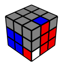
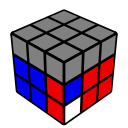

F2L
ルービックキューブ関連 > F2L
ルービックキューブのCFOPのF2Lの手順をまとめた。
- F面は青。
- 左右対称（IDの英字が同じで数字が違うもの）は省略。
- y が先頭にあるのはFLスロットに入れる手順。
- 赤がF面のときにはこの手順を使う。
- - はIT化が完了する位置。
- [?] は開始前の持ち替えやAUFと相殺しうる手順。
- 手順や分類は以下のページを参照した。
- 画像は VisualCube (v0.5.5) で生成した。
上面の色が同じ
- コーナーとエッジが離れていれば、 コーナーをスロットに退避してI化する。
| # | ID | Image | Algorithm | Memo |
|---|---|---|---|---|
| 1 | I2 | - [U] R U' R' | ||
| [y] | ||||
| 7 | S2 | [U'] R U2 R' - U2 R U' R' | ||
| [y] | ||||
| 5 | Q2 | [U'] R U R' - U2 R U' R' | ||
| [y] | ||||
| 15 | K2 | R U R' U2 R U' R' - U R U' R' | コーナーを、向きを変えつつスロットに入れる。5手目以降はE2。 | |
| [y] L' U L - U2 F U F' | コーナーを回しつつエッジを退避してT化。 | |||
| [y2] L U2 L' U L U L' - U L U' L' | バックスロットに入れるとき、1個目の手順では押し込みが多くなる。5手目以降はV1。 | |||
上面が側面の2色
- 基本的には、コーナーをスロットに退避してT化する。
- JとLはコーナーのD色の位置で判断できる。
| # | ID | Image | Algorithm | Memo |
|---|---|---|---|---|
| 4 | T1 | - R U R' | ||
| [y] | ||||
| 10 | R1 | [U'] R U R' - U R U R' | ||
| [U2] R U' R' - U' R U R' | エッジをスロットに退避するパターン。 | |||
| [y] | ||||
| 12 | J1 | R U' R' U R U' R' - U2 R U' R' | コーナーの向きを変えつつエッジをスロットに入れる。5手目以降はG2。 | |
| [y U] L' U2 L - U' F U F' | ||||
| [y2] L' U2 L2 U L2' U L | バックスロットに入れるとき、1個目の手順では押し込みが多くなる。I化の時点で他のスロットのペアがU面に出ている。 | |||
| 14 | L1 | [U'] R U' R' - U R U R' | ||
| [y] | ||||
底面の色が上面にある
- コーナーとエッジが離れていれば、エッジをスロットに退避してI化する。
| # | ID | Image | Algorithm | Memo |
|---|---|---|---|---|
| 21 | V1 | [U2] R U R' - U R U' R' | ||
| [y] | ||||
| 19 | U2 | [U] R U2 R' - U R U' R' | ||
| [y] | ||||
| 23 | M1 | [U] R U' R' U' R U' R' - U R U' R' | 先にR面を上げてコーナーをスロットに入れる。6手目以降はE2。 | |
| [y] | ||||
| [y2] R U2 R' U' R U' R' - L U2 L' | 1個目とI化の手順は同じ。3手目が U2 ならば、FRスロットを崩しても元に戻る。 | |||
| 17 | N2 | R U2 R' - U' R U R' | エッジの退避と同時にコーナーの向きを変える。 | |
| [y] | ||||
エッジがスロットに入っている
- コーナーの上面が底面の色ならB1かB2。
- それ以外はエッジを上げてT化する手順が多い。
| # | ID | Image | Algorithm | Memo |
|---|---|---|---|---|
| 34 | G1 |  |
[U] R U R' - U2 R U R' | |
| [y U] L' U L - U2 L' U L | コーナーを退避しつつエッジを移動してI化。 | |||
| 35 | H1 | [U'] R U R' - U F' U' F | (a) コーナーの底面の色が前向き。 | |
| [y U2] F U F' - U' L' U L | (b) コーナーの底面の色が横向き。 | |||
| [y' U2] f R f' - U' R' U R | (c) f'によってエッジの向きを変える。 | |||
| [y U] L' U L U' L' U L - U2 F U F' | (d) G1のFLスロットの手順でK2にする。7手目以降はK2。 | |||
| 32 | B1 | [U] R U' R' U R U' R' - U R U' R' | セクシームーブ×3が有名だが、リグリップせずに U を右手で回せるので、逆セクシー×3のほうが良い。6手目以降はE2。 | |
| [y'] R' U' R U R' U' R - U R' U' R | エッジが背面にあるときは、セクシームーブ×3だとリグリップも押し込みも不要になる。 | |||
| [y] | 対称なので上の左右逆の手順で良い。 | |||
| 31 | B2 | R U' R' - F' U2 F | ||
| [y] | 対称なので上の左右逆の手順で良い。 | |||
H1の手順の使い分け
持ち替えや F 系の動きを最小限にし、 B 系の動きを使わないために、エッジのあるスロットの場所と、エッジのEOが合っているか（エッジのあるスロットとペアを入れるスロットが異なる場合は、EOが合っていることもある）で使い分ける。
- エッジがFRスロットかBLスロットにある場合は、手順 (a) を使う。
- エッジがFLスロットにあり、EOが合っていない場合は、手順 (b) を使う。
- エッジがBRスロットにあり、EOが合っていない場合は、手順 (c) を使う。
- エッジがFLスロットかBRスロットにあり、EOが合っている場合は、手順 (d) を使う。
コーナーがスロットに入っている
- コーナーの向きが合っていればA2。
- エッジの上面とコーナーの側面が異色なら、F1。
- エッジの上面とコーナーの側面が同色なら、E2。
| # | ID | Image | Algorithm | Memo |
|---|---|---|---|---|
| 30 | F1 |  | R U R' - U' R U R' | コーナーのD色が側面になるようにコーナーを上げてT化。 |
| [y U2] L' U L - F U F' | コーナーを上げるときに向きを変えてT化。 | |||
| 27 | E2 | R U' R' - U R U' R' | コーナーのD色が上面になるようにコーナーを上げてI化。 | |
| [y] L' U2 L - F U2 F' | ||||
| 25 | A2 | [U'] R' F R F' - R U R' | (a) EOは合っているが、Fを含む。 | |
| [y U'] L' U L - U F U' F' | (b) | |||
| [y2 U'] f' L' f - U L U L' | (c) f でT化。 | |||
A2の手順の使い分け
- エッジの上面とコーナーの前面（裏にあるときは背面）が異色の場合は、手順 (b) を使う。
- エッジの上面とコーナーの前面が同色で、EOが合っていない場合は、y か y' で持ち替えて、手順 (b) を使う。
- エッジの上面とコーナーの前面が同色で、EOが合っている場合は、コーナーのあるスロットに応じて、手順 (a) か (c) を使う。
コーナーもエッジもスロットに入っている
- C1とD1は、前面に色が揃っているとき（D1のFRスロット）だけペアのまま上げ、それ以外は上げてちぎる。
| # | ID | Image | Algorithm | Memo |
|---|---|---|---|---|
| 39 | C1 | R U' R' U R U2 R' - U R U' R' | 4手目以降はU2。 | |
| [y] L' U L U L' U' L - U2 L' U L | 4手目以降はQ1。 | |||
| 41 | D1 |  | R U R' U' R U' R' - U2 F' U' F | 5手目以降はK1。 |
| [y] L' U L U L' U L - U' F U F' | 6手目以降はR1。 | |||
| 37 | A0 | R U2 R' U R U2 R' - U F' U' F | 手順が特殊。 | |
| [y] | 対称なので上の左右逆の手順で良い。 | |||
手順の使い方
EO
Edge Orientation。上記の手順の使い分けや、以降の説明にこの用語を使う。
注目しているエッジについて、エッジが上段にあってF面かB面の色がU面にあるとき、もしくはエッジが中段にあってF面かB面の色がF面かB面にあるとき、EOが合っていると言う。 次の状態は、青をF面としたときに青赤エッジのEOが合っている例である。
これらの例で青赤エッジの青と赤が逆ならば、EOが合っていない。
X、X2、X' を合わせて、「X 系の動き」と言うことにする。EOが合っているかどうかを変えるためには、U、D、L、R 系の動き以外の、持ち替えや F 系の動き、二層回しなどが必要となる。正しくスロットインされた状態はEOが合っているので、EOが合っているエッジは U、D、L、R 系の動きだけでスロットインができる。一方、EOが合っていないエッジを正しくスロットインするためには、U、D、L、R 系以外の動きが必要になる。
U、D、L、R 系以外の動きは回しづらいので、EOが合っている場合はこれらの動きを使わず、EOが合っていない場合でも最小限にすることが目標となる。
コーナーもエッジもスロットに入っていない場合
F2Lの各手順は、上下方向を中心に180度回転した状態でも回しやすい。例えば、S2のこの状態
は、U' R U2 R' U2 R U' R' と回す。この手順を元に、180度回転した状態
は、U' L U2 L' U2 L U' L' と回せる（裏F2L）。むしろ、揃えたスロットはもう見る必要が無いので、裏側のスロットから揃えていくことが望ましい。
一方、上下方向を中心に90度回転した状態は回しづらい。この場合は、y か y' で持ち替えて回す。持ち替えが手間に思えるが、EOから、この持ち替えや F 系の動きなどは使わなければならない。そのため、コーナーもエッジもスロットに入っていない場合には、基本的には、FLスロットの手順は載せていない。
ただ、FLスロットの手順がFRスロットの手順に比べて短い場合は例外。この場合は、持ち替えてFLスロットの手順を使うより、FRスロットの手順を使ったほうが良い。例えば、K2のこの状態
は、持ち替えてFRスロットの手順を使う y' R U R' U2 R U' R' U R U' R' で、最小限必要となる1回の持ち替えのみで揃えることはできる。しかし、FLスロットの手順を使って L' U L U2 F U F' のほうが楽である。なお、最後の U2 F U F' は、持ち替える y U2 L U L' や二層回しを使う d' U' L U L' でも良い。他の手順でも同様。U面の向きや埋まっているスロットの位置などに応じて使い分けができると良い。
格納するスロットがFRであっても、他のスロットが空いているならば、そのスロットを使った手順と見なしてFLスロットの手順を使うこともできる（空きスロット）。例えば、K2の状態
で、FLスロットが空いているならば、U L' U L U R U R' と回すことができる。載せている手順の - がIT化が完了する位置なので、- の前までは手順通りに回し、- 以降のスロットインの手順を適宜変えれば良い。
結局、コーナーもエッジもスロットに入っていない場合には、（格納するスロットかどうかに関わらず）空いているスロットを使ってIT化完了前までの手順を回せるなら回し、回せないならば y か y' で持ち替えて回し、スロットインすれば良い。
コーナーかエッジがスロットに入っている場合
F2Lの手順としては、コーナーやエッジがあるスロットとペアを格納するスロットが同じだが、実際に揃える際にはこれらのスロットは異なることがある。IT化までは、スロットやペアがあるスロットを手順のFRスロットとして手順を回し、スロットインの手順を適宜変える。
コーナーもエッジもスロットに無い場合のように持ち替えてから手順を回すと、持ち替えや F 系の動きなどが2回になってしまうことがあるので、FRスロットとFLスロットの両方の手順を載せている。エッジやコーナーのあるスロットが背面の場合は、このどちらのかの手順を180度回転した手順として回せる。
スロットイン以外に F 系の動きが出てくる場合、180度回転した手順が回しづらかったり、スロットの位置関係によっては持ち替えや F 系の動きなどが2回になってしまうので、他の手順も載せ、スロットやEOに応じた使い分けを記載している。
@kusano_k